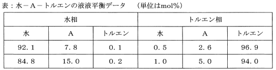

令和元年度（再試験） 問33 化学プロセス
水100 molに成分A 20 molを溶解した水溶液に、純粋なトルエン100 molを加え、容器の中で撹拌し、静置したところ、2液相に分離した。上層の成分Aの量として、最も近い値はどれか。相互溶解度は非常に小さいので、相互溶解度をゼロとして算出してよい。液液平衡のデータを下表に示す。

水の比重よりトルエンの比重の方が小さいことから、上層がトルエン、下層が水となります。
今回、成分A濃度の異なる液液平衡データが2種類与えられています。それぞれで分配係数を計算してみます。希薄溶液であり、抽出により分子が変化しない場合は分配係数が同じになります。
1行目：2.6 / 7.8＝1/3
2行目：5.0 / 15.0＝1/3
分配係数が1/3ですので、各層におけるAのモル分率xwaterとytolから立式します。上層であるトルエン相の成分Aの物質量はnAとします。使用する成分Aは20 molですので、水相側の成分Aの物質量は(20-nA)です。
xwater＝(20-nA) / {100＋(20-nA)}
ytol＝nA / (100＋nA)
上記式からytol＝1/3 xwaterを立式してnAを求めます。
nA / (100＋nA)＝1/3 × (20-nA) / {100＋(20-nA)}
nA2 – 220nA＋1000＝0
根の公式（解の公式）よりnA＝110±10√(111)です。√(111)≒10.54とすると、110 ± 10 × 10.54＝4.6もしくは215.4 molとなります。使用している成分Aは20 molですので、必ず20 mol以下になります。
よって最も近いのは4.5 molです。
ちなみに、分配係数から大まかに物質量を求めることも可能です。どこまで詳細に計算するのかは選択肢に応じて決めてください。
nA / (20-nA)＝1/3
nA＝4.96 mol